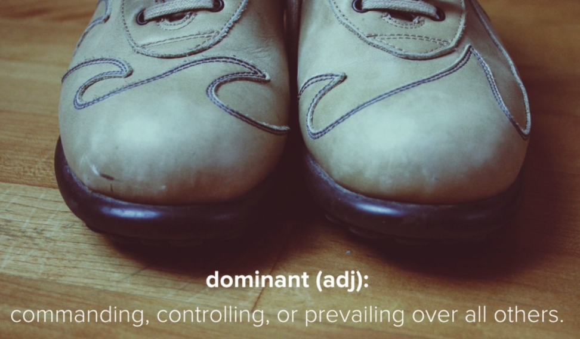
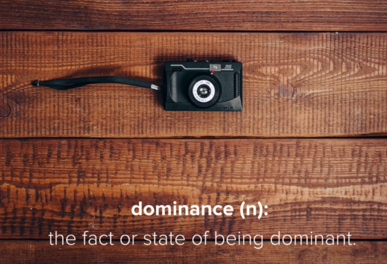
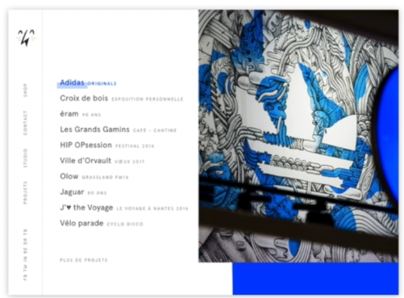
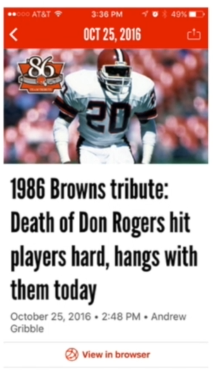

Jump to a section
15 · Dominance - Directing (and Maintaining) User Focus
Refined 15 October 2026 from the supplied Joe Natoli course notes. Original wording and captures remain preserved.
Core principle
Dominance gives the viewer an entry point and suggests relative importance through size, contrast, position and surrounding space.
Application to game tools
Emphasize the current decision. Before a valid preview, the next action is Preview rather than an unavailable Apply.
Assessment and qualification
No single visual feature determines attention in every situation; task and familiarity also matter.
Try it
Does the strongest emphasis correspond to the current state?
Source: 15 Dominance - Directing (and Maintaining) User Focus.md
Study detail and teaching translation
Dominance establishes a focal point and an order of importance. Consider what wins attention before reading every label.
Size, contrast, position and empty space work together; the strongest feature should correspond to a meaningful priority.
Teaching adaptation: the priority changes with state. Preview leads before a plan exists; Apply leads after review and required acknowledgment; the result deserves attention after completion.
Original captures



